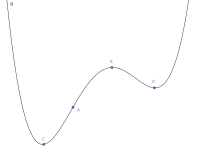

Venus
The moon.
2016-03-27
I recently read the science fiction novel 2312, by Kim Stanley Robinson. It was a really nice piece of work, but I wanted to investigate a few things that were referenced or came to mind while I was reading. First is the stability of inflated balloons around asteroids, second is changing rotational period with application of electromagnets.
We'll first approach the balloon. This is an interesting idea because it is a work around to colonizing bodies with too little gravity to sustain an atmosphere. If having a gas in between the main body and the balloon makes it stable, that'd be a neat way to have large volume of pressurized space to accompany whatever other habitats are built in the asteroid. But first we need to talk about stability and equilibrium. When there is no net force on an object it is said to be in equilibrium. Say, the balance between tension on the chain of a swing set and gravity. Or a pencil balanced perfectly on end.
Now the difference between those two situations is pretty stark, one will fall over with the slightest breeze and the other will eventually go back to hanging straight down almost without regard to how much you push it. The difference between these two cases is in their stability. One way to think about it is that while equilibrium is a property that any individual configuration might have, stability is a property that looks at the neighborhood around that configuration.
The easiest way to assess stability in a system with one variable is to look at a plot of potential energy with respect to that variable. Since force can be derived from potential energy by a spatial derivative ($&-\frac{dU}{dx}&$ for one dimension or $&-\nabla \cdot U&$ in 3) we can just look at a plot, and if there is a slant, that point is not in equilibrium, if the slope at a point is 0, if it's in a valley we can see that it is stable, and if it's on a hill we can see that it's unstable.

In this example plot, we would describe A as not in equilibrium, B as being unstable, C as being stable, and D as being metastable, since small displacements from where it is will result in it returning, but being pushed far enough, say, past B, it will reestablish equilibrium around C.
So, with a brief discussion of stability out of the way, lets talk about putting asteroids in balloons. First we'll characterize our asteroid and our balloon. We'll assume a spherical asteroid, because who's got the time for oblong things? Thanks to wikipedia's list of Gravitationally Rounded Object we can treat our asteroid as having a radius $&R_a&$ which is somewhere between Ganymede's 2600 km and miranda's 235 km. We'll keep referring to it as $&R_a&$ though as long as we can. And because we're making a balloon, we'll treat it as a thin shell of radius $&(1+\epsilon)R_a&$ where $&\epsilon > 0&$. This means the balloon is slightly larger than our asteroid. For example, if we wanted 10km clearance, which is a bit higher than the cruising altitude for commercial planes, we'd have $&.05<\epsilon<.005&$, for our smaller asteroids to our largest moons. But again, we'll continue to just refer to $&\epsilon&$ to keep it general.
insert demonstration of control over epsilon here
Now let's talk about how they're positioned relative to each other. At the moment we're just talking about 2 spheres, one hollow, one solid, but both have a center, and so the distance between those centers makes up all the information. Remember, this is space, from far away, you could just rotate yourself around and even though it looks like the balloon and asteroid are at right angles of where you last saw them, they'll keep on behaving the way they were. So we can just describe the distance between the two centers as x, which we know can range as $&0\le x < \epsilon R_a&$, and in fact, I'm going to redefine x such that $&x = \gamma \epsilon R_a&$ where $&0\le \gamma < 1&$ so we have 2 dimensionless factors applied to our base length, the asteroid radius.
insert demonstration of control over episilon and gamma here.